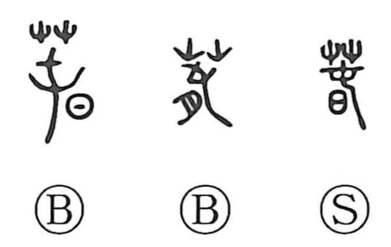

Explanation
Spring is a phono-semantic character. In early forms it was written with the grass radical added, and it uses the element 屯 as the phonetic. 屯 originally pictured the tassel of tied, fastened threads at the edge of a textile—an image that also underlies 純—and that bound tail, when taken as a form in its own right, becomes 冬, the tied-off end of yarn. In 春, however, 屯 is reinterpreted to suggest the roots of grasses sealed tight through the winter cold, now beginning to open under returning sunlight. The character thus evokes the moment when buds push up and stir; with the grass radical explicitly added, it yields forms meaning “bud.” The season’s name also resonates with shun, “to stir, to wriggle,” as insects begin to move when spring arrives. The names of the four seasons do not appear in oracle-bone inscriptions; the original form of 春 is first seen in bronze inscriptions some two-odd millennia ago.